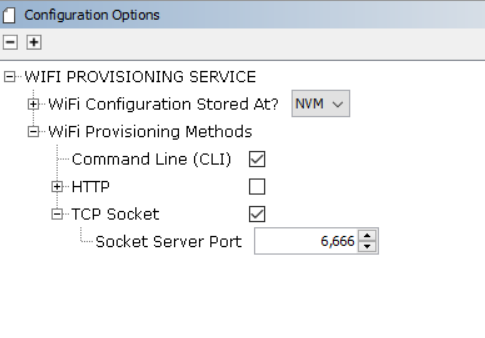
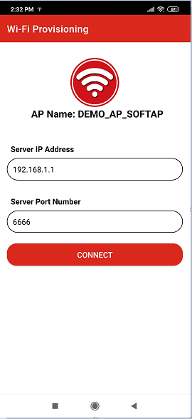

Wi-Fi provisioning System Service Usage
Table of contents
The Wi-Fi Provisioning System Service povides below methods to configuring desired Wi-Fi SSID and related security credentials of the Home AP into the device.
Wi-Fi Provisioning Methods
Command line
MHC configuration menu for Command line(CLI): 
- Enable Check box “Command Line(CLI)” to include CLI Wi-Fi provisioning method.
- After making configuration changes, generate the code.
- Compile the project and load the image into device.
Wi-Fi Provisioning commands Details
| Command | Details | Example |
|---|---|---|
| wifiprovhelp | Wi-Fi Provision System Service help command | wifiprovhelp |
| wifiprov set <bootmode> <save config> <country code> <channel> <auto_connect> <authtype> <ssid_name> <psk_name> | Set Wi-Fi Configuration for Station(STA) mode | wifiprov set 0 1 “GEN” 0 1 3 “DEMO_AP” “password” |
| wifiprowifiprov set <bootmode> <save config> <country code> <channel> <ssid_visibility> <authtype> <ssid_name> <psk_name> | Set Wi-Fi Configuration for Access point(AP) mode | wifiprov set 1 1 “GEN” 1 1 3 “DEMO_SOFTAP” “password” |
| wifiprov get | Get Wi-Fi Configuration | wifiprov get |
Wi-Fi Provisioning commands command parameters information,
| Parameter | Sub Parameter |
|---|---|
| bootmode | 0 - Station(STA) mode. 1- Access point(AP) mode. |
| save config | 0 - Do not save configuration in NVM(Program Flash Memory). 1- Save configuration in NVM . |
| country code | country code configuration: GEN - General USA - North America EMEA - Europe CUST1,CUST2 - Customer custom regulatory configuration |
| Channel | In Station mode value range from 0-13, 0 - select all the channels. 1-13 - select specified channel. In Access point mode value range from 1-13. |
| auto connect(only applicable in STA mode) | 0 - Don’t connect to AP, wait for client request. 1 - Connect to AP. |
| ssid visibility (only applicable in AP mode) | 0 - Hidden SSID. 1 - Broadcast SSID . |
| authtype(Security type) | 1 - OPEN Mode. 3 - WPAWPA2 (Mixed) mode. 4 - WPA2 mode. 5 - WPA2WPA3 (Mixed) mode. 6 - WPA3 mode. |
| ssid(ssid name) | SSID name |
| psk name(password) | Password/passphrase |
Note:
- Wi-Fi Provisioning using command line method is not recommended in production release due to security concerns.
- All commands the parameters are mandatory, and none are optional except for password in case of “open” authentication.
TCP Socket mode
MHC configuration menu for TCP Socket:
- Enable Check box “TCP Socket” to include TCP Socket Wi-Fi provisioning method.
- Modifiy the “Socket Server Port”.Defult port number is 6666.
- After making configuration changes, generate the code.
- Compile the project and load the image into device.
Wi-Fi provisioning service can be configured to use TCP socket, a socket server is activated when the device boots.Use a laptop or mobile phone as a TCP client to connect to the device’s socket server. Wi-Fi provisioning service defult TCP server port is 6666.
Wi-Fi provisioning with JSON format
User can send the below JSON format data from TCP Client to provisioning the device.
Example:
{
"mode": 0, "save_config": 1,"countrycode":"GEN",
"STA": { "ch": 0, "auto": 1, "auth": 3, "SSID": "DEMO_AP", "PWD":"password"},
"AP": {"ch": 2, "ssidv": 1, "auth": 4, "SSID": "DEMO_AP_SOFTAP", "PWD": "password" } }
Details of JSON Parameters,
| Parameter | Sub Parameter | Value Details |
|---|---|---|
| mode | 0 - Station(STA) mode. 1- Access point(AP) mode. | |
| save_config | 0 - Do not save configuration in NVM. 1- Save configuration in NVM . | |
| STA | ch (Channel) | In Station mode value range from 0-13, 0 - select all the channels. 1-13 - select specified channel. |
| auto(auto connect) | 0 - Don’t connect to AP, wait for client request. 1 - Connect to AP. | |
| Auth(Security type) | 1 - OPEN Mode. 3 - WPAWPA2 (Mixed) mode. 4 - WPA2 mode. 5 - WPA3 mode. | |
| SSID(ssid name) | SSID name | |
| PWD(password) | Password/passphrase | |
| AP | ch (Channel) | In Access point mode value range from 1-13 |
| ssidv(ssid visibility) | 0 - Hidden SSID. 1 - Broadcast SSID . | |
| Auth(Security type) | 1 - OPEN Mode. 3 - WPAWPA2 (Mixed) mode. 4 - WPA2 mode. 5 - WPA2WPA3 (Mixed) mode. 6 - WPA3 mode. | |
| SSID(ssid name) | SSID name | |
| PWD(password) | Password/passphrase | |
Wi-Fi provisioning with Mobile Application
Follow below steps to provisioning the device using mobile application:
- Download and install the mobile application “Wi-Fi Provisioning” from Android play store.
- Start PIC32MZW1 device in AP mode (Configure Wi-Fi Service “Device Mode” as “AP”).
- Using mobile Wi-Fi setting, make a Wi-Fi connection to PIC32MZW1 AP Mode.

- Open the “Wi-Fi Provisioning” application.
- Enter PIC32MZW1 IP address as Server IP in the mobile application.
- Enter the Wi-Fi provisioning System Service configured port number.

- SCAN near by HOMEAP and select the desired HOMEAP.
- Enter the password.

- User can manually add provisioning information using “Add New Network” option also.

- After provisioning the device reboot and connect to HOMEAP.
Sending the TCP data without mobile application: Using laptop or mobile phone as TCP client,user can send the TCP data in below format to provisioning the device.
TCP Data Format : apply,<ssid>,<Auth>,<password>,NULL
| Parameter | Details |
|---|---|
| ssid(ssid name) | SSID name |
| Auth (security type) | 1- OPEN MODE 2 - WPA2 Mode |
| psk name(password) | Password/passphrase |
HTTP
Webpage using HTTP
MHC configuration menu for HTTP (unsecure): 
- Enable Check box “HTTP” to include Wi-Fi provisioning using webpage.
- press “Yes”for components inclusion pop-up.
- When user enable “HTTP” checkbox only, defualt wi-f provising method enable with port number 80.
- After making configuration changes, generate the code.
- Compile the project and load the image into device.
Follow below steps to provisioning the device using HTTP:
- Start PIC32MZW1 device in AP mode (Configure Wi-Fi Service “Device Mode” as “AP”).
- Connect Laptop or mobile phone to PIC32MZW1 AP device.
- Open the browser and enter the PIC32MZW1 AP IP address(example: http://192.168.1.1/).

- Goto “Network Configuratio” page.
- Update the Configuration details and click on “Apply Wi-Fi Configuration”

- Device will reboot and apply configuration in the device.
HTTP functionality is also supported in station(STA) mode.
Webpage using HTTPNET (Un-Secure)
MHC configuration menu for HTTPNET(Unsecure):
Follow below steps to enable to HTTPNET unsecure,
- Enable Check box “Enable HTTPNET”.
- Configure “Server port”.User can configure any valid port number.
- Enable Check box “HTTP” and press “Yes”for components inclusion pop-up.
- After making configuration changes, generate the code.
- Compile the project and load the image into device.
Follow below steps to provisioning the device using HTTP:
- Start PIC32MZW1 device in AP mode (Configure Wi-Fi Service “Device Mode” as “AP”).
- Connect Laptop or mobile phone to PIC32MZW1 AP device.
- Open the browser and enter the PIC32MZW1 AP IP address with port number(example: http://192.168.1.1:401/).
- Goto “Network Configuratio” page.
- Update the Configuration details and click on “Apply Wi-Fi Configuration”
- Device will reboot and apply configuration in the device.
Webpage using HTTPNET (Secure)
MHC configuration menu for HTTPNET(secure): 
Follow below steps to enable HTTPNET secure,
- Enable Check box “Enable HTTPNET”.
- Enable check box “Enable Secure Connection with HTTPNET”
- Configure “Server port”.User can configure any valid port number.
- Enable Check box “HTTP” and press “Yes”for components inclusion pop-up.
- After making configuration changes, generate the code.
- Compile the project and load the image into device.
Follow below steps to provisioning the device using HTTP:
- Start PIC32MZW1 device in AP mode (Configure Wi-Fi Service “Device Mode” as “AP”).
- Connect Laptop or mobile phone to PIC32MZW1 AP device.
- Open the browser and enter the PIC32MZW1 AP IP address with port number(example: https://192.168.1.1:443/).
- Goto “Network Configuratio” page.
- Update the Configuration details and click on “Apply Wi-Fi Configuration”
- Device will reboot and apply configuration in the device.
How The Library Works
The Wi-Fi Provisioning System Service implemented Command line,HTTP and Socket mode Wi-Fi Provisioning method.Wi-Fi Provisioning System Service by default enabled along Wi-Fi System Service.User can make configuration changes as per their application requirement
Execution Flow
The following diagram shows how the Command line and Socket mode Wi-Fi Provisioning methods are enabled.